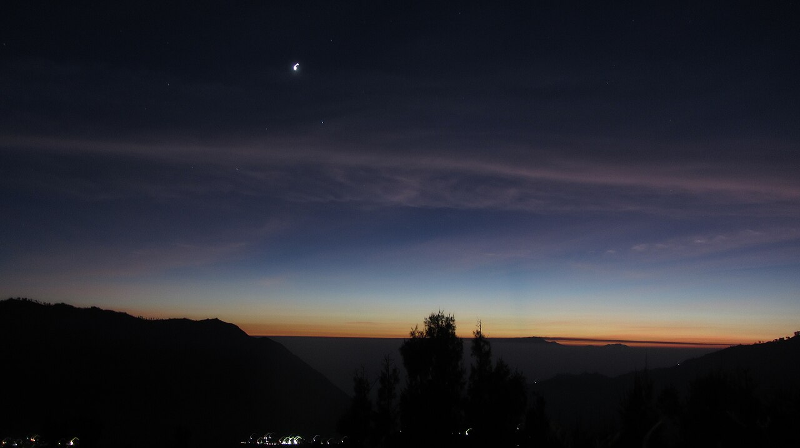
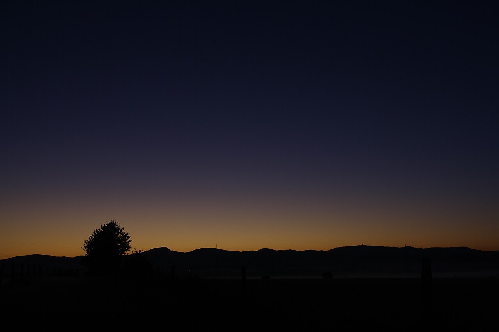
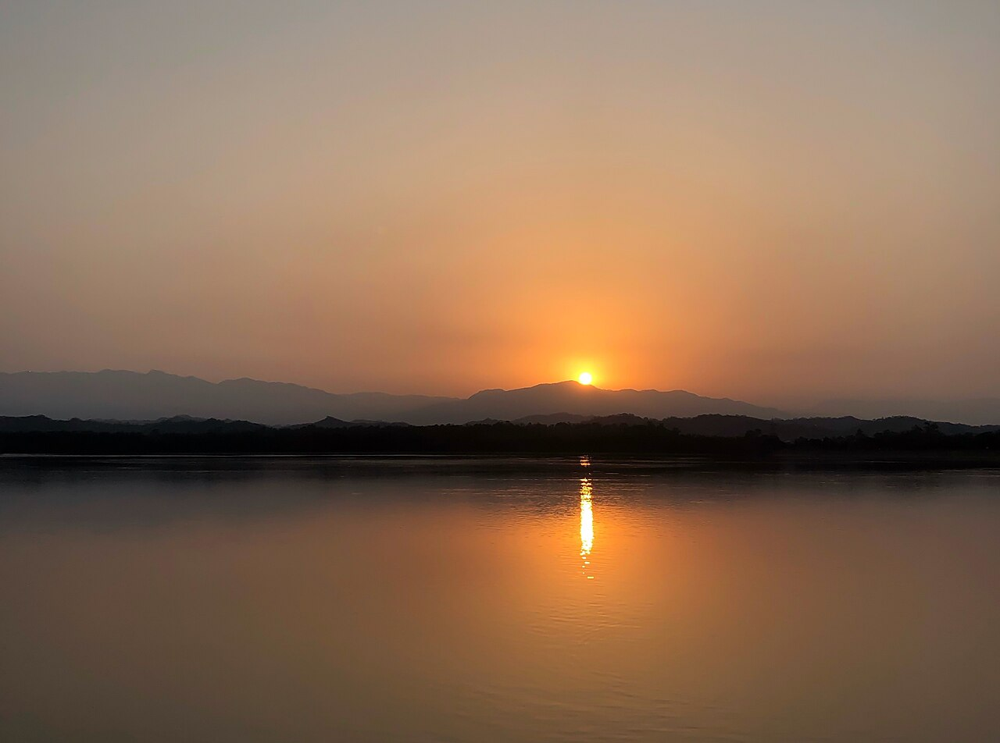

Next alarm
7:03AM
Fri 30 Oct · sunrise 7:33
Inside your window, 5:30 to 8:00.
30 min before sunrise
7:03AM
Fri 30 Oct · sunrise 7:33
Inside your window, 5:30 to 8:00.
Rise and Shine moves your iPhone alarm with sunrise every day, and never past the hours you set.

Sun 18° below the horizon
Sun 6° below the horizon
Sun on the horizonA full-screen alarm on the Lock Screen, in the Dynamic Island and on your Apple Watch, even if the app is closed.
7:03
30 min before sunrise
Midsummer dawns and midwinter mornings stay sensible: the alarm holds at the edge of the hours you choose.
Bedtime and wind-down reminders count back from tomorrow's alarm and your sleep goal.
Your alarm drawn against the sun for twelve months, inside your wake window.
Turn on travel updates and the alarm moves to the local sunrise when you change time zones, without opening the app.
Sunrise is worked out on the device. No account, no ads, no tracking.
20 March
6:42 AM
Sunrise 7:12
In March it rings at 6:42.
21 June
5:30 AM
Sunrise 5:48
In June the window holds it at 5:30.
22 September
6:27 AM
Sunrise 6:57
By September, 6:27.
21 December
6:51 AM
Sunrise 7:21
And in December, 6:51.
Yes. It follows the sun, so it moves a little each day as sunrise does. To keep it inside a range, set a wake window under Wake time.
Yes. Alarms ring through Silent mode and Focus, just like the Clock app.
If your location follows your device, the alarm updates each time you open the app. Turn on Update alarms when I travel, and allow Always location access, to have it move without opening the app.
In polar day or night, the alarm rings at the latest time in your wake window.
Turn on Health in Settings and allow Sleep access. Last night's sleep then appears on the Home screen. The app only reads; it never writes to Health.
Nothing. It is free, with no ads and no in-app purchases. It needs iOS 26 or later.
More answers on the support page.
From tomorrow, your alarm keeps time with the light outside. Free for iPhone, with Apple Watch.
Get it free on the App Store